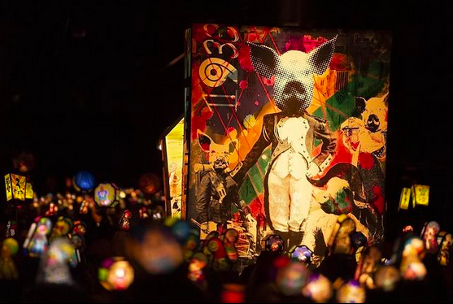

Fasnacht

Herzlich Willkommen auf meiner Webseite über die/ meine Basler Fasnacht. Auf dieses Thema bin ich gekommen, da ich leidenschaftlich Fasnacht mache und wir das Thema kurze Zeit nach der endlich wieder stattfindenden Fasnacht 2022 auswählen mussten.
Auf meiner Webseite wird man über die alte Geschichte, die Musik an der Fasnacht, die Kostüme und einen Fasnachtsalltag aus einer aktiven Fasnächtlerinnen-Sicht informiert. Ich hoffe, Sie lernen etwas neues dazu und Ihnen gefällt meine Webseite. Viel Spass!
Auf meiner Webseite wird man über die alte Geschichte, die Musik an der Fasnacht, die Kostüme und einen Fasnachtsalltag aus einer aktiven Fasnächtlerinnen-Sicht informiert. Ich hoffe, Sie lernen etwas neues dazu und Ihnen gefällt meine Webseite. Viel Spass!